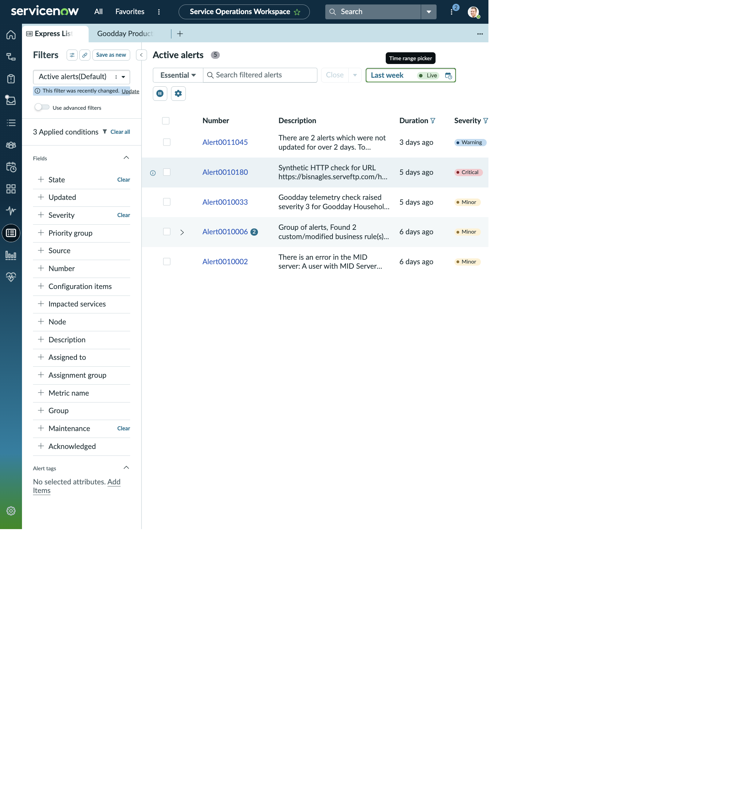

SERVICE OPERATIONS WORKSPACE · EXPRESS LIST
Alert0010033 · Goodday telemetry
The time range was extended to Last week so the Goodday telemetry event appears. This page combines the selected alert with the impacted-service list from its record.
EXPRESS LIST RESULT
The Last week filter
- Filter
- Active alerts
- Time range
- Last week · Live
- State condition
- Not Closed
- Maintenance condition
- false
- Alert
- Alert0010033
- Age shown in Express List
- 6 days ago
- Severity / priority
- Minor / Urgent
- Configuration item
- Goodday Household Web - Production
| Number | Description | Configuration item | Age | Severity | Priority | Metric |
|---|---|---|---|---|---|---|
| Alert0010033 | Goodday telemetry check raised severity 3 for Goodday Household Web - Production. | Goodday Household Web - Production | 6 days ago | Minor | Urgent | goodday_service_snapshot |
ALERT RECORD
Alert0010033 · full captured fields
- Source
- Goodday
- Node / resource
- Goodday Household Web - Production
- Type
- goodday_telemetry
- Configuration item
- Goodday Household Web - Production
- Task / case
- (empty) / (empty)
- Metric name
- goodday_service_snapshot
- Severity
- Minor
- State
- Reopen
- Overall event count
- 1,283
- Message key
- goodday:telemetry:application_service
- Initial event generation time
- 2026-10-15 23:14:56
- Last event generation time
- 2026-10-21 21:24:23
- Created
- 2026-10-15 23:15:12
- Updated
- 2026-10-21 21:24:29
- Flap count
- 0
- Flap start window
- 2026-10-16 00:51:55
- Parent / knowledge article
- (empty) / (empty)
- Short description
- goodday_telemetry (Goodday Household Web - Production) - Goodday telemetry check raised severity 3 for Goodday Household Web - Production.
Description: Goodday telemetry check raised severity 3 for Goodday Household Web - Production.
| Impacted service | Severity | Service class | View Service action |
|---|---|---|---|
| Goodday Household Web - Production | OK | Calculated Application Service | Available |
| Goodday Production | OK | Mapped Application Service | Available |
Priority calculation snapshot: the record’s priority breakdown lists application services, severity, configuration item type, role, and state as factors. The workspace row showed the alert’s priority group as Urgent while the severity remained Minor.
WORKSPACE VISUALS
Express List with Last week selected
See the working view in context. The record details above remain available here as readable HTML.
